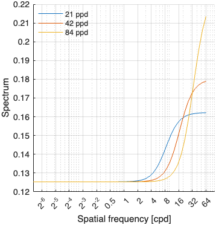
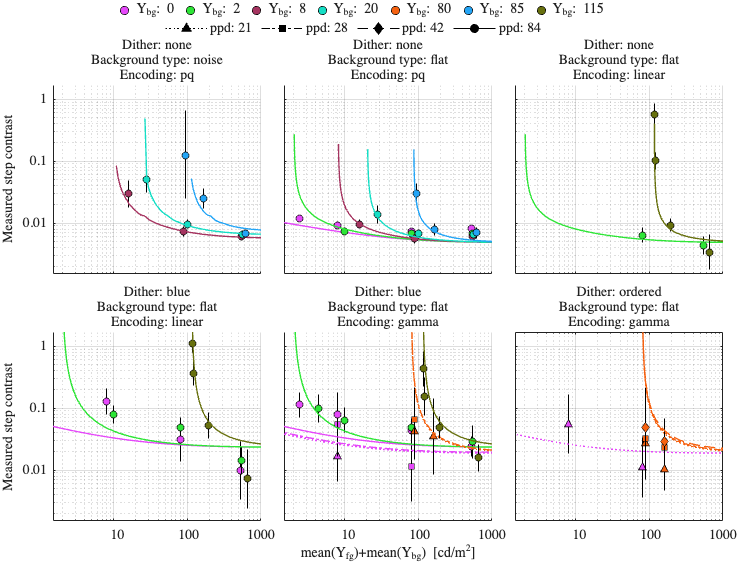
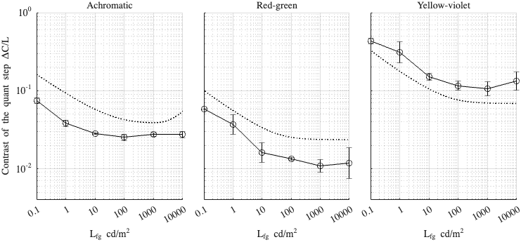

Fitting config: dither_spd, model: transducer_freq_pool
Fitting error (RMSE): 0.850181
Model parameters
p.beta = 0.478338; p.gs_num = [ 0.0614882 0.0246556 0.999506 ]; p.noise_params = [ 0.0608768 1.327 1.51671 1.8275 0.0432654 9.8429 ]; p.dither_amp_params = [ 0.0152295 0.640912 ]; p.blue_dither_params = [ 0.399454 2.92571 0.125314 0.438449 ];
Model components
Blue noise dither spectrum

Dataset: [ar2025]
Scaling factor: 2.39475

Dataset: [kim2020]
Scaling factor: 9.69103
